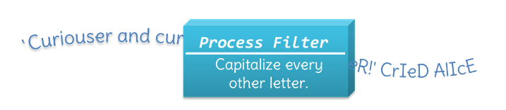

Process Filters
Filters, you recall, are programs that read from standard input, and which write to standard output. Filters may change, use, or learn about the characters flowing through your program. Two kinds of filter programs are process filters and state filters.

- A process filter does something to the characters it encounters.
- A state filter learns something about the stream by examining characters.
Process filters apply some basic rule—the process—to the values in the stream. The simplest process filter is: read and echo (although I suppose that read and ignore would actually be simpler). That's what the cat filter does.
Process filters typically solve problems like this:
- Copy files or search for a particular value in a stream (cp and grep)
- Case modification or changing character order in a stream.
- Stream editing using a sequence of editing commands (sed)
- Translating data from one form to another (decimal to binary)
 This course content is offered under a
CC
Attribution Non-Commercial license. Content in this course
can be considered under this license unless otherwise noted.
This course content is offered under a
CC
Attribution Non-Commercial license. Content in this course
can be considered under this license unless otherwise noted.